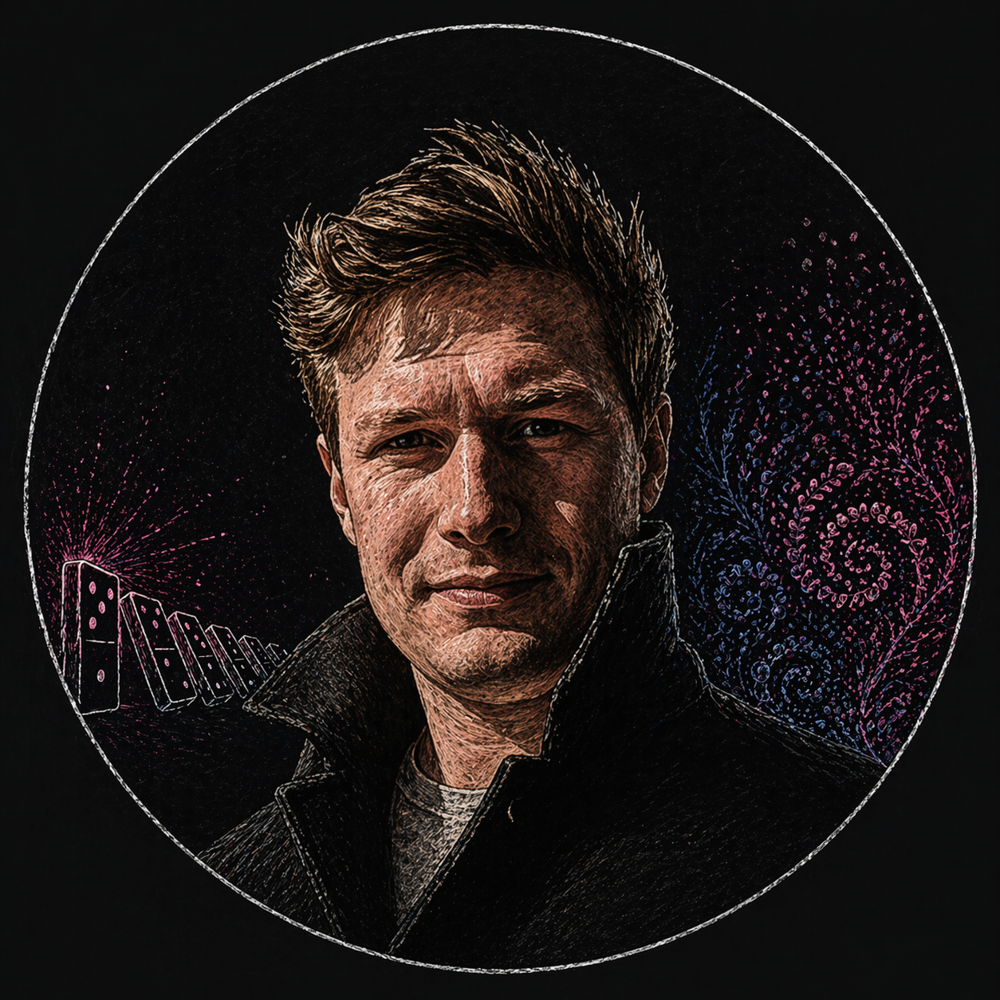

Filip M. Madsen, PhD
Molecular biologist explaining how life works—one idea at a time.
Biology is extraordinarily complex. Yet much of it follows a few simple rules.
I write short essays that open the “black box” of life—from everyday experiences down to the molecular level.
→ Biweekly newsletter (every second week)
About
I'm a molecular biologist with nearly two decades of experience studying how life works at the smallest level.
I received my PhD in medical science from the Karolinska Institute, followed by a postdoc at the Broad Institute of MIT and Harvard, and a senior scientist posotion at the University of Copenhagen.
I currently work in as a scientific director in experimental and translational medicine, connecting molecular understanding to real-world biology and human health.
Core Idea
We tend to think of life as overwhelmingly complex, and on the grand scale is sure looks like it. Yet, on the smallest level, it cannot escape three (extremely) simple physical rules:
- Opposite charges attract
- Like charges repel
- Two things cannot occupy the same space
Following these rules, molecular machines and biological processes—like dominoes—unfold one piece at a time.
Writing
The core tenant of my writing, wrestle with the question: How does that work?
- How a virus takes over your cells
- What happens inside your body in one second
- Why proteins fold so fast
- How cells make decisions
To answer these questions, I write short, illustrated assays; simple, digestable, and highliting the main concepts.
How I Use AI
I use AI tools as part of my writing process, primarily for structuring ideas, summarizing my texts and for line-editing.
Additionally, AI creates my images. However, they are based on my own work. Please see my (!) image repository here.
The core ideas, explanations, and majority of the writing are my own, grounded in my scientific training and experience.
AI is a tool. The thinking remains human.
Contact
filipmundt@gmail.com
